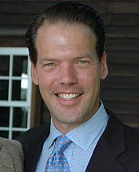

|
 Peter Anthony HinrichsPeter was Chief Financial Officer and Chief Compliance Officer at SSARIS Advisors, LLC. |
||
Important Facts |
||
| September 23, 1957 | Peter was born in Stamford, Connecticut. He was the fourth child of Stuart Hinrichs and Mary-Ella Henderson. | |
| Peter graduated from Curry College with a Bachelor of Science Degree in Business Management. | ||
| Peter was a member of St. Barnabas Episcopal Church of Greenwich, Round Hill Club of Greenwich, New York Yacht Club, La Confrèrie des Chevaliers du Tastevin and a life member of The Saint Nicholas Society of the City of New York. | ||
| Peter spent several years in trading and administration at Merrill Lynch Futures Inc., and later at Prudential Bache Securities. | ||
| 1983 | Peter became Chief Financial Officer of RXR Capital Management, Inc. | |
| June 16, 1984 | He married Susan Elizabeth Sullivan in Nashville, Tennessee. | |
| 1986 | Peter was elected to the board of the Fountain House of New York, a non-profit rehabilitation center for the mentally ill. |
|
| July 11, 1995 | Twins, Colin Henderson and Charlotte Anthony Hinrichs were born. | |
| May 1, 2001 | RXR Capital Management reorganized into SSARIS Advisor LLC. Peter was responsible for the financial, administrative and operational functions and is a member of the Investment Committee | |
| Peter was a passionate collector of old books, particularly those of nautical history. | ||
| March 12, 2016 | Peter died at 3:30 AM at the Greenwich Hospital of complications caused by kidney cancer. He was surrounded by his family. |

Last update: Tuesday, March, 3, 2026